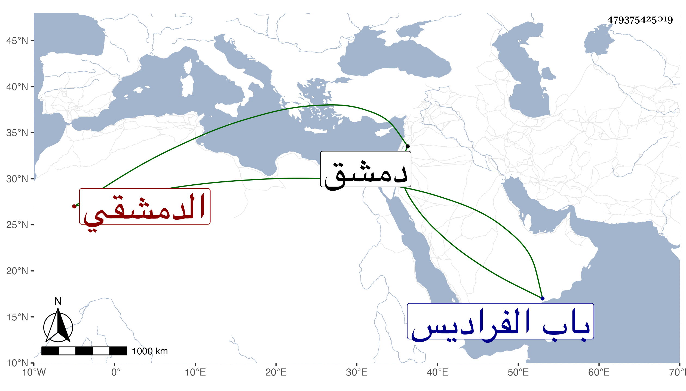

0902Sakhawi.DawLamic.ITO20230111-ara1.EIS1600.479375425019
Biography ID: 479375425019
538
عبد الظاهر بن أحمد بن الجوبان سري الدين بن الشهاب الدمشقي أخو عبد الكافي الآتي ويعرف بابن الجوبان وبابن الذهبي . أحد كتاب الانشاء بدمشق بل ناب في كتابة سرها ، وكان ذا نظم كتب عنه منه الشهاب اللبودي وقال إنه مات فجأة في عاشر شعبان سنة ست وستين وصلى عليه من الغد ودفن بمقبرة باب الفراديس بطرفها الشمالي رحمه الله ، ورأيت البدري كتب عنه في مجموعه قوله:
| فتنت بنشابي أضحى محاربي | بأسهم ألحاظ بها الموت قد حلا |
| ينصل سهم اللحظ من قتلتي به | ألا فانظروه من دمي قد تنصلا |
